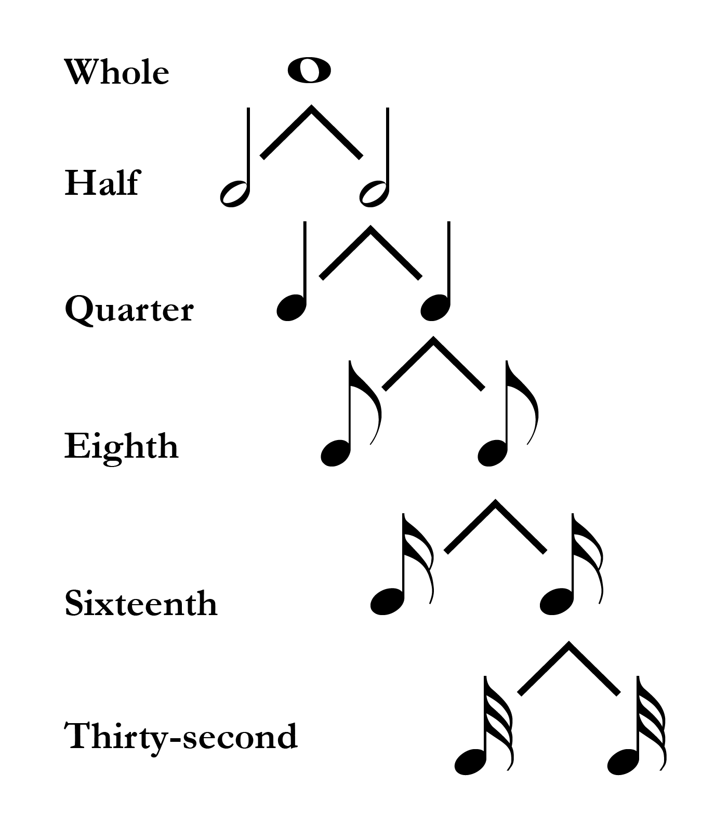
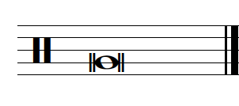
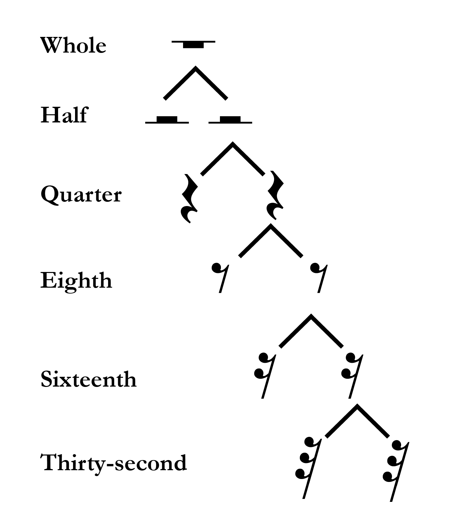
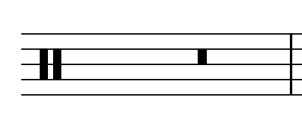
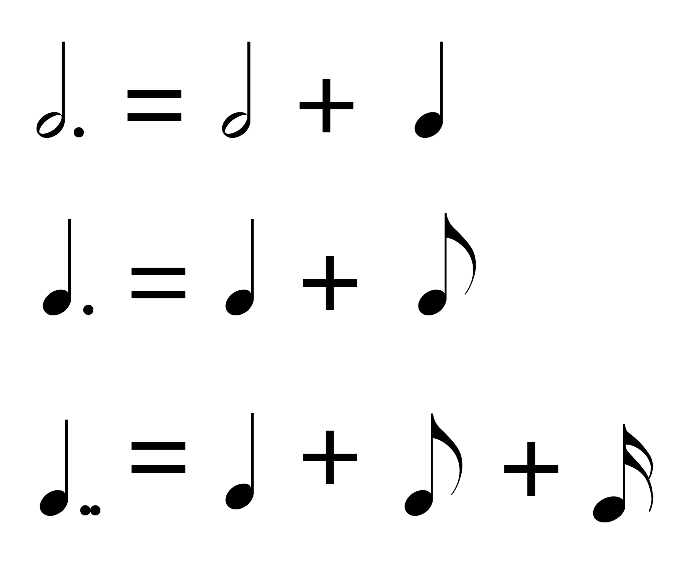

Open Music Theory：繁體中文版
節奏記譜
查看英文原文
Key Takeaways
- Notes consist of several different components, including a notehead, stem, beam, and flag.
- Common note values include the whole note, half note, quarter note, eighth note, and sixteenth note.
- Common rest values include the whole rest, half rest, quarter rest, eighth rest, and sixteenth rest.
- British terms for rhythmic values are different from American terms.
- A dot increases the duration of a note by half. Subsequent dots add half the duration of the previous dot.
- A tie connects two or more notes of the same pitch. Do not rearticulate any "tied to" notes.
Music is a temporal art—in other words, time is one of its components—so organizing time is essential for Western musical notation. The next several chapters will focus on the temporal facets of rhythm and meter, starting in this chapter with the basic note and rest values in this notation system.
廣義而言，節奏指音樂中的聲音與休止在時間上持續多久。回想〈音符、譜號與加線的記寫〉，音符可能包含不同部分，如例 1所示：

- Notehead：符頭；
- Stem：符幹；
- Beam：符槓；
- Flag：符尾。
西方記譜法有多種常見的音符時值。它們具有層級關係，也就是長短由彼此的比例決定。每種時值都可以分成兩個較小的時值，如例 2。正如一個披薩可分成兩個二分之一、四個四分之一、八個八分之一，全音符也能分成兩個二分音符、四個四分音符、八個八分音符，其餘依此類推。

- Whole：全音符；
- Half：二分音符；
- Quarter：四分音符；
- Eighth：八分音符；
- Sixteenth：十六分音符；
- Thirty-second：三十二分音符。
請特別注意例 2的下列特點：
- 符頭可以實心（黑色）或空心（白色）；四分音符及更短的時值使用實心符頭。
- 空心符頭可以有符幹，也可以沒有；實心符頭則都有符幹。
- 符尾只加在實心符頭的符幹上。
另外，有三種方法可將音符時值減半：
- 加上符幹，例如全音符變成二分音符。
- 將符頭填成實心，例如二分音符變成四分音符。
- 增加一條符尾，例如四分音符變成八分音符，或八分音符變成十六分音符。
你可以利用下列時值等量配對練習，熟悉音符時值：
Open Music Theory 主要使用北美的音符時值名稱，但熟悉英式名稱也很有幫助。下表列出兩者的對照。
| 符號 | 美式名稱 | 英式名稱 |
|---|---|---|
| 𝅝 | Whole note（全音符） | Semibreve |
| 𝅗𝅥 | Half note（二分音符） | Minim |
| 𝅘𝅥 | Quarter note（四分音符） | Crotchet |
| 𝅘𝅥𝅮 | Eighth note（八分音符） | Quaver |
| 𝅘𝅥𝅯 | Sixteenth note（十六分音符） | Semiquaver |
比十六分音符更短的音符，例如三十二分音符、六十四分音符等，都是透過增加符尾形成。你還可能遇到較少見的倍全音符，英式名稱為 breve，見例 3。倍全音符有時在符頭兩側各只畫一條線；較早期的記譜樣式則使用較方正、較不像橢圓的符頭。倍全音符可分為全音符，也就是兩個全音符的時值等於一個倍全音符。

查看英文原文
Note Values
Broadly speaking, rhythm refers to the duration of musical sounds and rests in time. As you'll recall in the chapter titled Notation of Notes, Clefs, and Ledger Lines, notes may contain several different components, as seen in Example 1:
There are many common note values in Western musical notation. Note values are hierarchical; in other words, their lengths are defined relative to one another. Each note value can be divided into two smaller values, as seen in Example 2. Just as a whole pizza divides into two halves, four quarters, eight eighths, etc., a whole note divides into two half notes, four quarter notes, eight eighth notes, and so on.
Pay special attention to these aspects of Example 2:
- Noteheads can be filled in (black) or unfilled (white); quarter notes and shorter durations are filled in.
- Unfilled noteheads may or may not have a stem, but filled noteheads always have stems.
- Flags are only added to the stems of filled noteheads.
Additionally, there are three ways to decrease a note's value by half:
- Adding a stem to a note (i.e., whole to half)
- Filling in a notehead (i.e., half to quarter)
- Adding a flag (i.e., quarter to eighth or eighth to sixteenth)
You can practice note values in the following equivalency exercise:
Open Music Theory privileges the North American names for note values, but it’s worth being familiar with the British names as well. The table below provides these names.
| Symbol | American name | British name |
|---|---|---|
| 𝅝 | Whole note | Semibreve |
| 𝅗𝅥 | Half note | Minim |
| 𝅘𝅥 | Quarter note | Crotchet |
| 𝅘𝅥𝅮 | Eighth note | Quaver |
| 𝅘𝅥𝅯 | Sixteenth note | Semiquaver |
Note values shorter than the sixteenth note (thirty-second note, sixty-fourth note, etc.) are created by adding extra flags. You may run into one additional, less common note value called the double whole note (breve in British English; Example 3). Double whole notes are sometimes notated with only one line on either side of the notehead. In older musical notation styles, the notehead appears more square than oval. Double whole notes divide into whole notes (i.e., two whole notes make up one double whole note).
- 全休止符掛在線的下方，二分休止符則坐在線的上方。可把全休止符想成比較「重」，因此往下掛；二分休止符則像高帽，坐在線上，如同帽子戴在頭上。
- 請仔細練習四分休止符的畫法；許多學生覺得它不容易畫。
- 在休止符上增加一個尾鉤，例如八分休止符變成十六分休止符，會使時值減半。

倍全休止符雖然少見，但也可能遇到，見例 5。其時值等於兩個全休止符，看起來像實心方塊，寫在由上往下第二個間內。

你可以利用下列練習，熟悉音符與休止符時值：
也可以利用下列等量配對練習，熟悉音符與休止符時值：
查看英文原文
Rest Values
Broadly speaking, rests refer to the duration of silences in music. Each hierarchical note value has a corresponding rest value, as seen in Example 4. Like note values, each rest value can be divided into two smaller values. Several additional aspects of Example 4 should be noted:
- Notice that a whole rest hangs down from a line while a half rest sits on top of a line. It may be helpful to think of a whole rest as “heavier” than a half rest to remember that it hangs down; likewise, a half rest resembles a top hat, so you can think of it as sitting on top of a line as if on a person’s head.
- Practice drawing quarter rests carefully; many students find them difficult to draw.
- Adding a flag to a rest (i.e., eighth to sixteenth) decreases a rest's duration by half.
Although rare, you may run across a breve rest (Example 5). A breve rest is equivalent in length to two whole rests. It looks like a filled-in box and appears on the second space from the top.
You can practice note and rest values in the following exercise:
You can practice with note and rest values in the following equivalency exercise:
附點與延音線能延長時值。附點緊接在音符或休止符後方，使時值增加原本的一半，見例 6。例如，四分音符等於兩個八分音符，所以附點四分音符等於三個八分音符。同樣地，全音符等於兩個二分音符，因此附點全音符等於三個二分音符。
一個時值可以加上多個附點。第一點之後，每一點增加的時值都是前一點的一半。例如，複附點四分音符，也就是加兩個附點的四分音符，其時值等於四分音符、八分音符與十六分音符相加。換句話說，複附點音符的時值是原音符的 1¾ 倍。

你可以利用下列等量配對練習，熟悉附點音符與附點休止符的時值：
延音線（tie）是一條弧線，用來連接兩個或更多同音高的音符，不用於休止符。延音線連到的後續音符不重新起音；也就是說，它將多個音符的時值合在一起。例 7前兩個音之間的延音線表示：演奏或演唱這個二分音符與四分音符時，四分音符不再重新發聲，而是將第一個音持續到三個四分音符的長度，不是兩個。這個時值也可寫成附點二分音符。
例 7。延音線連接前兩個音符。
你覺得延音線看起來像圓滑線，並沒有錯；圓滑線可參閱〈其他記譜要素〉。兩者的差異是：圓滑線連接不同音高，指示以 tenuto（保持音）方式演奏或演唱；延音線則連接相同音高，使音的持續時間更長。
- Gerou, Tom 與 Linda Lusk。1996。《記譜法必備辭典》（Essential Dictionary of Music Notation）。洛杉磯：Alfred。
- Gould, Elaine。2011。《Behind Bars：記譜法權威指南》（Behind Bars: the Definitive Guide to Music Notation）。倫敦：Faber Music。
- Hefling, Stephen E.。2001。〈附點節奏〉（“Dotted Rhythms”）。Grove Music Online。https://doi.org/10.1093/gmo/9781561592630.article.08054。
- McGrain, Mark。1986。《記譜法》（Music Notation）。波士頓：Berklee Press。
- Morehen, John，Richard Rastall 修訂。2001。〈音符時值〉（“Note Values”）。Grove Music Online。https://doi.org/10.1093/gmo/9781561592630.article.20127。
- Rastall, Richard。2001。〈休止符〉（“Rest”）。Grove Music Online。https://doi.org/10.1093/gmo/9781561592630.article.23250。
- 同上作者。2001。〈延音線〉（“Tie”）。https://doi.org/10.1093/gmo/9781561592630.article.27937。
- Roemer, Clinton。1985。《抄譜的藝術：演奏用樂譜的準備》（The Art of Music Copying: The Preparation of Music for Performance），第二版。Sherman Oaks：Roerick Music Company。
* 作業使用 Noto Music 字型顯示音符時值。可從 Google Fonts 下載 Noto Music。
媒體素材署名
- 符頭、符幹、符槓與符尾，© Bryn Hughes，採用 CC BY-SA（姓名標示－相同方式分享）授權。
- 節奏時值，© OMT 第一版，採用 CC BY-SA（姓名標示－相同方式分享）授權。
- 倍全音符，© Chelsey Hamm，採用 CC BY-SA（姓名標示－相同方式分享）授權。
- 休止符時值，© OMT 第一版，採用 CC BY-SA（姓名標示－相同方式分享）授權。
- 倍全休止符，© Chelsey Hamm，採用 CC BY-SA（姓名標示－相同方式分享）授權。
- 附點音符時值，© OMT 第一版，採用 CC BY-SA（姓名標示－相同方式分享）授權。
查看英文原文
Dots and ties
Dots and ties allow durations to be lengthened. A dot is written immediately after a note or rest, and it increases its duration by half (Example 6). For example, a quarter note is equivalent in duration to two eighth notes; therefore, a dotted quarter note would be equivalent to three eighth notes. Similarly, a whole note is equivalent to two half notes, so a dotted whole note would be equivalent to three half notes.
Multiple dots can be added to a duration, with each subsequent dot adding half the duration of the previous one. For example, a double-dotted quarter note (i.e., a quarter note with two dots) is equivalent in duration to a quarter note, eighth note, and sixteenth note added together. In other words, a double-dotted note is 1¾ the duration of the original note.
You can practice with dotted note and rest values in the following equivalency exercise:
A tie is a curved line that connects two or more notes with the same pitch. (Ties are never used with rests.) Tied-to notes are not rearticulated. In other words, ties are used to combine the durations of multiple notes. The tie connecting the first two notes in Example 7 indicates that, when these half and quarter notes are played or sung, the quarter note should not be articulated; in other words, the first note should be held for the duration of three quarter notes instead of two. Another way to write this duration is as a dotted half note.
Example 7. A tie connects the first two notes.
You would be correct to think that a tie looks like a slur (see Other Aspects of Notation). The difference between the two is that slurs connect notes of different pitches and indicate to play or sing the notes tenuto, while ties connect notes of the same pitch to create a note with a longer duration.
- Gerou, Tom and Linda Lusk. 1996. Essential Dictionary of Music Notation. Los Angeles: Alfred.
- Gould, Elaine. 2011. Behind Bars: the Definitive Guide to Music Notation. London: Faber Music.
- Hefling, Stephen E. 2001. “Dotted Rhythms.” Grove Music Online. https://doi.org/10.1093/gmo/9781561592630.article.08054.
- McGrain, Mark. 1986. Music Notation. Boston: Berklee Press.
- Morehen, John, revised by Richard Rastall. 2001. “Note Values.” Grove Music Online. https://doi.org/10.1093/gmo/9781561592630.article.20127.
- Rastall, Richard. 2001. “Rest.” Grove Music Online. https://doi.org/10.1093/gmo/9781561592630.article.23250.
- ——. 2001. "Tie." https://doi.org/10.1093/gmo/9781561592630.article.27937.
- Roemer, Clinton. 1985. The Art of Music Copying: The Preparation of Music for Performance, 2nd edition. Sherman Oaks: Roerick Music Company.
- Note Durations (musictheory.net)
- Rhythmic Values (learnmusictheory.net)
- Note Values (Essentials of Harmony)
- Dots and Ties (YouTube)
- Dots and Ties (musictheory.net)
- Writing Notes and Rests, Rhythmic Equations, pp. 3–7 (.pdf)
- Advanced Rhythmic Equations, p. 3 (.pdf)
- Slurs and Ties (.pdf)
* Assignments use the font Noto Music to display note values. Download Noto Music from Google Fonts.
Media Attributions
- Noteheads, Stem, Beam, Flag © Bryn Hughes is licensed under a CC BY-SA (Attribution ShareAlike) license
- Rhythmic Values © OMT 1st Edition is licensed under a CC BY-SA (Attribution ShareAlike) license
- A Double Whole Note © Chelsey Hamm is licensed under a CC BY-SA (Attribution ShareAlike) license
- Rest Values © OMT 1st Edition is licensed under a CC BY-SA (Attribution ShareAlike) license
- Breve Rest © Chelsey Hamm is licensed under a CC BY-SA (Attribution ShareAlike) license
- Dotted Note Values © OMT 1st Edition is licensed under a CC BY-SA (Attribution ShareAlike) license